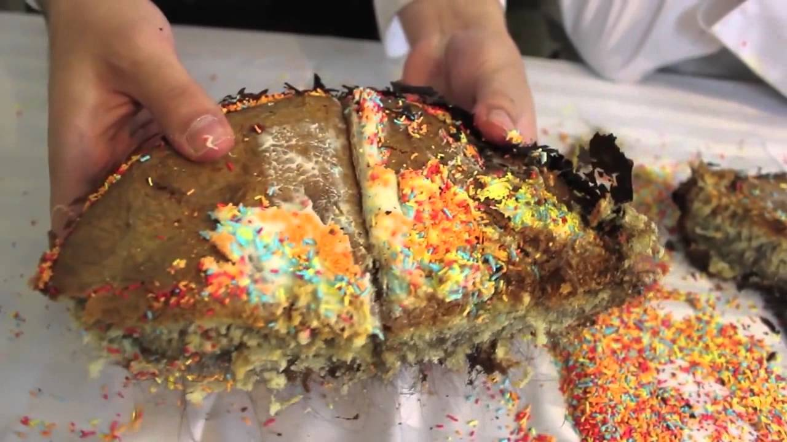

Hair Cake Recipe

Hair Cake to celebrate your bestie birthday
The Chef's favorite cake is the ideal cake for any occasion
List of ingredients
- Eggs
- Flour
- Sugar
- Butter
- Hair
- Lemon Zest
Bakin' It
- In bowl put the eggs, flour and sugar. Mix well.
- Add hair and butter, mix again
- Bake at 200ºC for 20 minutes
- When out of the oven, add the lemon zest on top
Return to main page